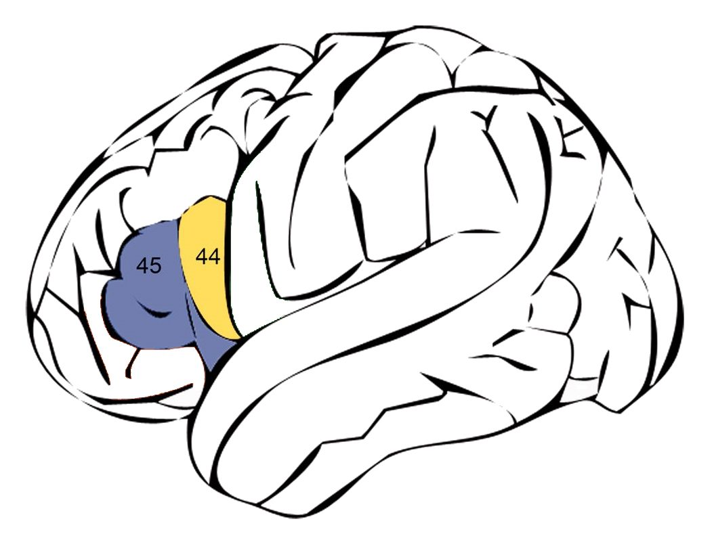

How the brain works
Memory, sleep, pain, plasticity, language, vision, emotion, consciousness and development.
Signals and circuits
 Signals and circuits
Signals and circuitsThe action potential
The nerve impulse: an all-or-nothing electrical wave that travels along the axon as ions flow in and out. How Hodgkin and Huxley cracked it using the squid giant axon.
Read → Signals and circuits
Signals and circuitsBrain plasticity
The brain changes with everything we learn and can reorganise after an injury. The basis of rehabilitation, of learning at any age and of cognitive reserve.
Read → Signals and circuits
Signals and circuitsBrain development
From a tube of cells in the embryo to the adult brain, through the explosion of connections in childhood and the remodelling of adolescence. Why the first years matter so much.
Read → Signals and circuits
Signals and circuitsFunctional neuroimaging and the connectome
Functional MRI shows which areas work during a task, and tractography draws the brain's wiring. What these images can and cannot tell us.
Read →Functions of the mind
 Functions of the mind
Functions of the mindMemory
There is not one memory but several, in different brain circuits. How a memory forms, why we forget, what sleep does and when forgetfulness is a reason to see a doctor.
Read → Functions of the mind
Functions of the mindSleep
We spend a third of our lives asleep, and it is not wasted time: the brain consolidates memories, clears waste and regulates mood. Sleep stages, the body clock and how much sleep we need.
Read → Functions of the mind
Functions of the mindPain
Pain is not in the damaged tissue: the brain builds it. How the signal travels, why pain can persist without an injury and what types of pain there are.
Read →
Functions of the mindLanguage
Speaking and understanding depend on a network of areas, mainly in the left hemisphere, that Broca and Wernicke began to map in the 19th century. What aphasia is and how it is rehabilitated.
Read → Functions of the mind
Functions of the mindVision
Seeing is not taking a photograph: the brain devotes almost a third of the cortex to building what we see. The journey from the retina to the occipital lobe, and what happens when it is damaged.
Read → Functions of the mind
Functions of the mindEmotions
Fear, joy, sadness or disgust are responses of the brain and body that help us survive. The role of the amygdala, the prefrontal cortex and the body, and what Phineas Gage taught us.
Read → Functions of the mind
Functions of the mindConsciousness
Being awake and aware of yourself and your surroundings. Which structures sustain it, what coma and the vegetative state are, and why it remains one of the great mysteries of science.
Read → Functions of the mind
Functions of the mindSpatial navigation
How the brain knows where we are: place cells, grid cells and others form an inner "GPS" discovered by O'Keefe and the Mosers. Why getting lost can be an early symptom of Alzheimer's.
Read →